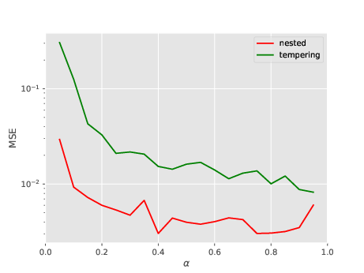
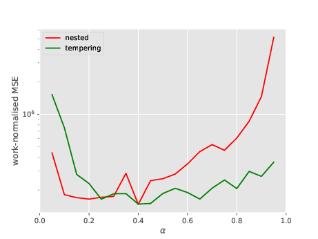

\[ \newcommand{\ind}{\mathbb{1}} \]
By “popular” demand (i.e., Adrien asked for it), here are the numerical experiments I promised in my previous post. I did these experiments initially to illustrate some points in the talk I gave at MaxEnt 2023.
NS-SMC vs tempering SMC for a Gaussian-like target
Salomone et al discuss how NS (nested sampling, both the vanilla and the SMC versions) may outperform tempering whenever the target distribution exhibits pathologies such as phase transition. It is not easy (to me at least) to grasp how phase transition may occur in a Bayesian posterior, but I suspect it tends to occur when the posterior is multi-modal. Please have a look at their paper for more details on this and their first numerical experiment which illustrates this point.
In this first experiment, I wanted to see whether NS-SMC is competitive with tempering SMC on a less challenging target distribution, i.e. the good old logistic regression posterior, which is typically Gaussian like, and therefore unimodal.
In the plots below, I compare two instances of waste-free SMC, one based on a tempering sequence, the other on the NS sequence discussed in the previous post. Both algorithms derive automatically the next element in these sequences so that the ESS (effective sampling size) is \(\alpha N\). Both rely on random walk Metropolis kernels, which are calibrated on the current particle sample.
I consider the sonar dataset (dim=61). The plot below show how the MSE (over 100 runs) of the log-marginal likelihood evolves as a function of \(\alpha\) for both algorithms; considered values for \(\alpha\) are \(0.05, 0.10, \dots, 0.95\). This plot is a bit misleading, because, when \(\alpha\) changes, the CPU cost changes as well: the large \(\alpha\) is, the larger is the number of intermediate distributions.

So let’s do a second plot, where the \(y-\)axis is the work-normalised MSE; that is, MSE times number of total evaluations of the likelihood (which is a good proxy for overall CPU cost). See below.

Both variants seems to lead to the same level of performance (i.e. CPU vs error trade-off). One point to note is that the best performance for NS is obtained by taking \(\alpha\) small.
Bottom line: NS-SMC seems indeed competitive with tempering SMC. This is a bit surprising to me (as they rely on two very different sequences of distribution), but it shows that NS-SMC may deserve more scrutiny from the Bayesian computation community, I think.
A limitation of vanilla NS
Another experiment, possibly of more limited interest. For the same type of target distributions (logistic regression posterior, this time for the Pima dataset), the plot below illustrates the bias of vanilla NS as a function of the number \(k\) of MCMC steps performed at each iteration. Recall that in vanilla NS, you discard one particle at each time \(t\) (the one with smallest likelihood), choose randomly one of the \(N-1\) remaining one, apply \(k\) MCMC steps to this selected particle, and add back the output to the particle sampler.
This plot suggests that NS may be biased if \(k\) is too small. I am not sure why this is happening. This may be because NS is valid only when \(k\to \infty\). Or maybe because of the adaptive MCMC strategy I’m using: as in the previous section, I use random walk Metropolis, and I recursively adapt the proposal covariance to the empirical covariance matrix of the \(N\) particles.

How to replicate these results
I have added some time ago a nested module to particles, which implements both vanilla NS and NS-SMC. The numerical experiments reported above may be reproduced by running the scripts in folder papers/nested.